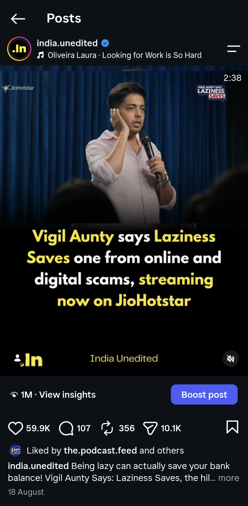
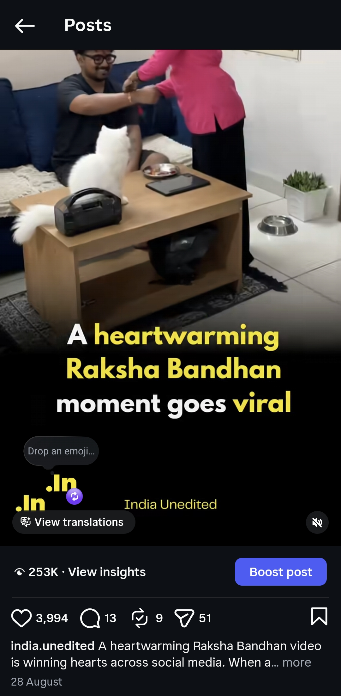
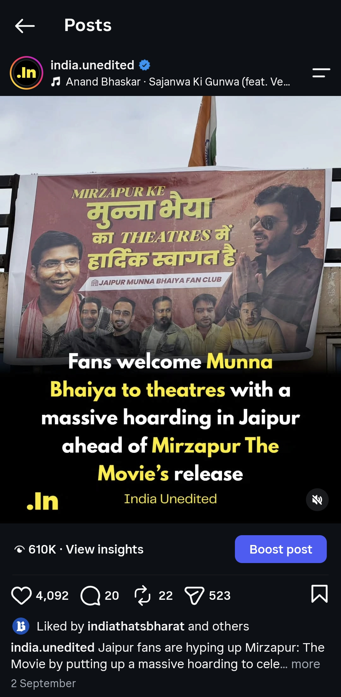
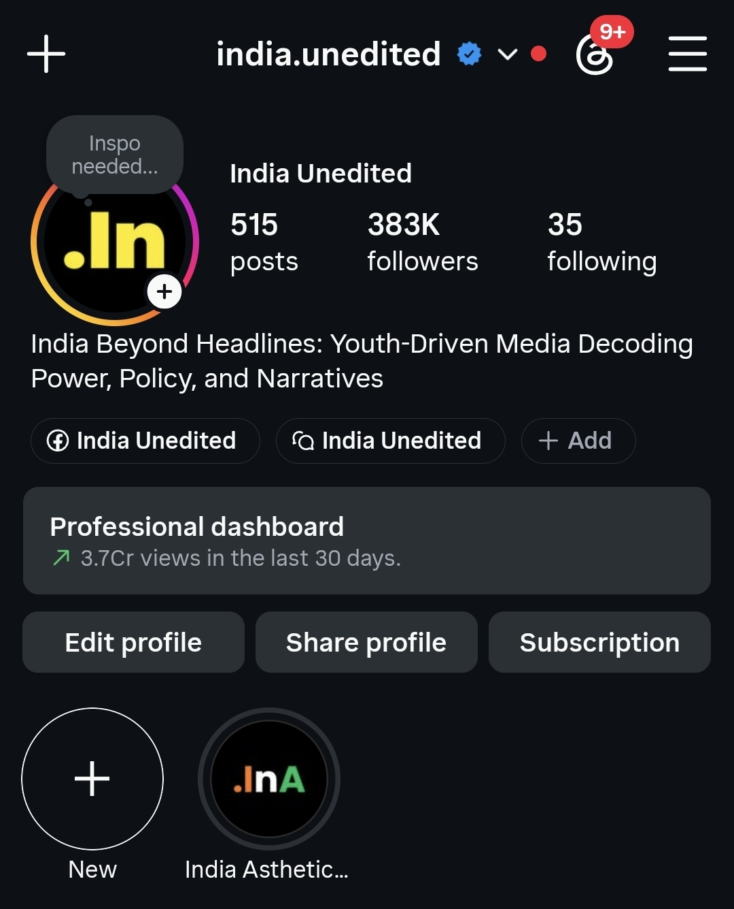
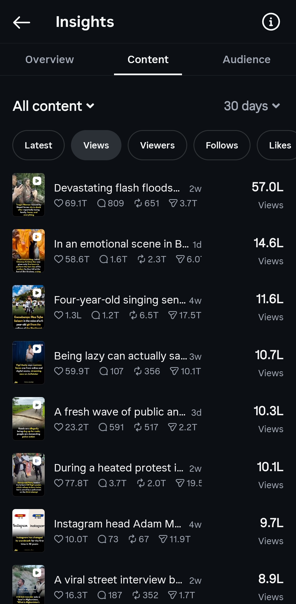

Culture • News • Perspective
Culture • News • PerspectiveIndependent media network
Stories that move culture.
We build high-attention communities and turn brand messages into stories people actually choose to watch, read and share.



Not just content
We turn attention into affinity.
ACL On Feed is the media network of Anvith Creative Labs, built for the way India watches, listens and shares. Our editorial brands create distinct worlds and meaningful ways for brands to belong in them.
Our network
Distinct voices.
One creative engine.
From sharp cultural commentary to conversations worth keeping, every channel is made for a specific audience.
Culture • News • Perspective Ideas • People • Conversations
Ideas • People • Conversations
Selected work
Made to stop
the scroll.
Editorial instincts, platform-native craft and a point of view—brought together in every story.

India Unedited
The most wholesome Rakhi gift

India Unedited
Ideas that travel

India Unedited
Progress, in perspective

India Unedited
Context beyond the headline
For brands
Built for the feed.
Not pasted onto it.
We combine editorial judgment, social-native creative and distribution through our owned communities. The result is branded communication designed to feel at home in the audience's feed.
Branded storytelling
News-style, cultural and narrative-led integrations shaped around the way our audiences already consume content.
Social campaigns
Campaign concepts, platform-native creative and publishing designed for attention rather than conventional ad placement.
Editorial amplification
Relevant stories packaged through the voice and visual language of our media properties.
Custom formats
Carousels, short-form video, explainers and conversation-led formats developed around the campaign objective.
How we work
Brief→Editorial angle→Creative→Distribution→Performance
Audience & impact
Built for real
attention.
383KIndia Unedited
community
community
19.2KThe Podcast Feed
community
community
37.48MViews in the latest
30-day insight window
30-day insight window




Competitive benchmark
Smaller audience.
Stronger response.
Public 30-day engagement-rate snapshot used for directional benchmarking. Audience size and engagement rate measure different things, so the comparison is presented side by side rather than as a blanket claim of superiority.
Engagement rate
384K followers in the comparison snapshotEngagement rate
3.6M followers in the comparison snapshotEngagement rate
9.5M followers in the comparison snapshotSource: Socialinsider public-profile analysis screenshots supplied for the latest 30-day period. Metrics are time-sensitive and should be refreshed periodically.

Campaigns · partnerships · branded content
Bring us the brief.
We'll find the story.
Tell us what the brand needs to achieve. We'll come back with an editorial route built for the feed.
Discuss a campaign ↗